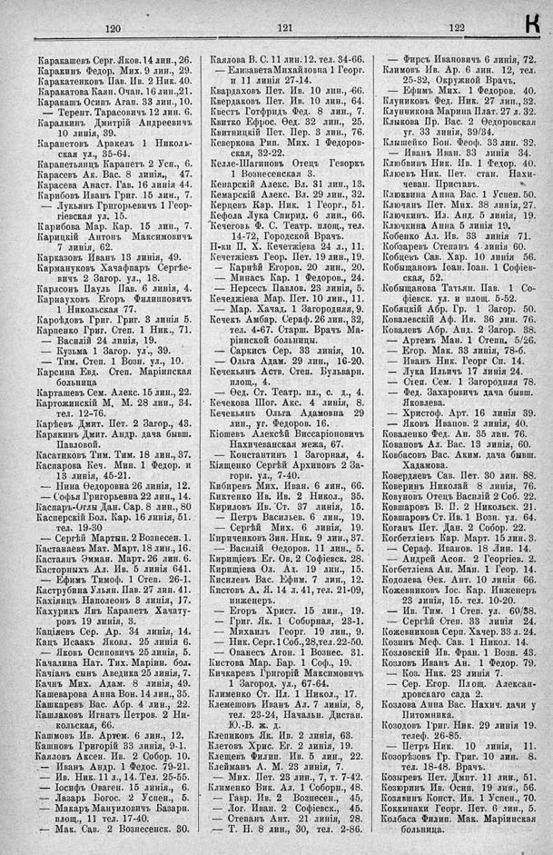

Лист источника 546
Скан

Распознанный текст
120
Каракашевъ Серг. Яков. 14 лин., 26.
Каракинъ Федор. Мих. 9 лин., 29.
Каракатенковъ Пав. Ив. 2 Ник. 40.
Каракатова Каян. Очан. 16 лин., 21.
Каракашъ Осипъ Агап. 33 лин., 10.
— Терент. Тарасовичъ 12 лин. 6.
Каралкинъ Дмитрій Андреевичъ
10 линія, 39.
Карапетовъ Аракелъ 1 Николь-
ская ул., 35-64.
Карапетъянцъ Карапетъ 2 Усп., 6.
Карасевъ Ак. Вас. 8 линія,, 47.
Карасева Анаст. Гав. 16 линія 44.
Карибовъ Иванъ Григ. 15 лин., 7.
— Лукьянъ Григорьевичъ 1 Геор-
гіевская ул. 15.
Карибова Мар. Кар. 15 лин., 7.
Карицкій Антонъ Максимовичъ
7 линія, 62.
Карказовъ Иванъ 13 линія, 49.
Кармануковъ Хачафпаръ Сергѣе-
вичъ 2 Загор. ул., 18.
Карлсонъ Пауль Пав. 6 линія, 4.
Карнауховъ Егоръ Филипповичъ
1 Никольская 77.
Кароѣдовъ Григ. Григ. 3 линія 5.
Карпенко Григ. Степ. 1 Ник., 71.
— Василій 24 линія, 19.
— Кузьма 1 Загор. ул., 39.
— Тим. Степ. 1 Возн. ул., 10.
Карсина Евд. Степ. Маріинская
больница
Карташевъ Сем. Алекс. 15 лин., 22.
Картожинскій М, М. 28 лин., 34.
тел. 12-76.
Карѣевъ Дмит. Пет. 2 Загор., 43.
Карякинъ Дмит. Андр. дача бывш.
Павловой.
Касатиковъ Тим. Тим. 18 лин., 37.
Каспарова Кеч. Мин. 1 Федор. и
13 линія, 45-21.
— Нина Ѳедоровна 26 линія, 12.
— Софья Григорьевна 22 лин., 14.
Каспаръ-Оглы Дан. Сар. 8 лин., 80
Касперскій Бол. Кар. 16 линія, 51.
тел. 19-30
— Сергѣй Мартын. 2 Вознесен. 1.
Кастанаевъ Мат. Март, 18 лин., 16.
Кастаянъ Эмман. Март. 26 лин. 6.
Касторныхъ Ал. Ив. 5 линія 641.
— Ефимъ Тимоф. 1 Степ. 26-1.
Каструбина Ульян. Пав. 27 лин. 41.
Кахіянцъ Наполеонъ 3 линія, 17.
Кахурикъ Янъ Карапетъ Хачату-
ровъ 19 линія, 3.
Каціевъ Сер. Ар. 34 линія, 14.
Кацъ Исаакъ Яковл. 25 линія 6.
— Яковъ Осиповичъ 25 линія, 5.
Качалина Нат. Тих. Маріин. бол.
Качіанъ сынъ Аведика 25 линія, 7.
Качнъ Мих. Адам. 8 линія, 49.
Кашеварова Анна Вон. 14 лин., 35.
Кашкаревъ Вас. Абр. 4 лин., 22.
Кашлаковъ Игнатъ Петров. 2 Ни-
кольская, 66.
Кашмовъ Ив. Артем. 6 лин., 12.
Кашновъ Григорій 33 линія, 9-1.
Каяловъ Аксен. Ив. 2 Собор. 10.
— Иванъ Андр. 1 Федос. 79-21.
— Ив. Ник. 11 л., 14. Тел. 25-55.
— Іосифъ Оваген. 15 линія., 6.
— Лазарь Богос. 2 Успен., 5.
— Макаръ Мануиловичъ Базарн.
площ., 11 тел. 17-40.
— Мак. Сав. 2 Вознесенск. 30.
121
Каялова В. С. 11 лин. 12. тел. 34-66.
— Елизавета Михайловна 1 Георг.
и 11 линія 27-14.
Квардаховъ Пет. Ив. 10 лин., 66.
Квердаковъ Пет. Ив. 10 лин., 64.
Квестъ Готфридъ Фед. 8 лин., 7.
Квитко Ефрос. Ѳед. 32 лин., 25.
Квитницкій Пет. Пер. 3 лин., 76.
Кеверкова Рип. Мих. 1 Федоров-
ская, 32-22.
Келле-Шагиновъ Отецъ Геворкъ
1 Вознесенская 3.
Кенарскій Алекс. Вл. 31 лин., 13.
Кемарскій Алекс. Вл. 29 лин., 32.
Керцевъ Кар. Ник. 1 Георг., 51.
Кефола Лука Спирид. 6 лин., 66.
Кечеговъ Ф. С. Театр. площ., тел.
14-72, Городской Врачъ.
Н-ки П. Х. Кечетжіева 24 л., 11.
Кечетжіевъ Геор. Пет. 19 лин., 19.
— Карнѣй Егоров. 20 лин., 20.
— Минасъ Кар. 1 Федоров., 24.
— Нерсесъ Павлов. 23 линія, 5.
Кечеджіева Мар. Пет. 10 лин., 11.
— Мар. Хачад. 1 Загородняя, 9.
Кечекъ Амбар. Сераф. 26 лин., 32,
тел. 4-67. Старш. Врачъ Ма-
ріинской больницы.
— Саркисъ Сер. 33 линія, 10.
— Ольга Адам. 29 лин., 16-20.
Кечекьянъ Аств. Степ. Бульварн.
площ., 4.
— Ѳед. Ст. Театр. пл., с. д., 4.
Кечекова Шог. Акс. 4 линія, 8.
Кечекьянъ Ольга Адамовна 29
лин., уг. Федоров. 16.
Кіошевъ Алексѣй Виссаріоновичъ
Нахичеванская межа, 67.
— Константинъ 1 Загорная, 4.
Кіященко Сергѣй Архиповъ 2 За-
горн. ул., 7-40.
Кибиревъ Мих. Иван. 6 лин., 66.
Киктенко Ив. Ив. 2 Никол., 35.
Кириловъ Ив. Ст. 37 линія, 15.
— Петръ Васильев. 6 лин., 19.
— Сергѣй Мих. 6 линія, 19.
Кириченковъ Зин. Ник. 9 лин., 37.
— Василій Ѳедоров. 11 лин., 5.
Кириціевъ Ег. Ов. 2 Софіевск. 28.
Кирищіева Ол. Ап. 19 лин., 15.
Кисилевъ Вас. Ефим. 7 лин., 12.
Кистовъ А. Я. 14 л. 41, тел. 21-09,
инженеръ.
— Егоръ Христ. 15 лин., 19.
— Григ. Як. 1 Соборная, 23-1.
— Михаилъ Георг. 19 лин., 9.
— Ник. Серг. 1 Соб., 28, тел. 22-50.
— Ованесъ Агон. 1 Вознес. 31.
Кистова Мар. Бар. 1 Соф., 19.
Кичкаревъ Григорій Максимовичъ
1 Загород. ул., 67-64.
Клименко Ст. Ил. 1 Никол., 17.
Клемешовъ Иванъ Ал. 7 линія, 8,
тел. 23-24, Начальн. Дистан.
Ю.-В. ж. д.
Клепиковъ Як. Ив. 2 линія, 63.
Клетовъ Хрис. Ег. 2 линія, 19.
Клещевъ Филип. Ив. 5 лин., 22.
Клейманъ А. М. 23 линія, 7.
— Мих. Пет. 23 лин., 7, т. 7-42.
Клименко Вик. Ал. 1 Соборн., 48.
— Гавр. Ив. 2 Вознесен., 45.
— Лог. Иван. 2 Софіевск., 45.
— Степанъ Ант. 21 линія, 28.
— Т. Н. 8 лин., 30, тел. 2-86.
122
К
— Фирсъ Ивановичъ 6 линія, 72.
Климовъ Ив. Ар. 6 лин. 12, тел.
25-32, Окружной Врачъ.
— Ефимъ Мих. 1 Федоров. 40.
Клуниковъ Фед. Ник. 27 лин., 32.
Клунникова Марина Плат. 27 л. 32.
Клыкова Пр. Вас. 2 Ѳедоровская
уг. 33 линія, 39/34.
Клышейко Бон. Феоф. 33 лин. 32.
— Иванъ Иван. 33 линія 34.
Клюбвинъ Ник. Ив. 1 Тедор. 40.
Клюевъ Ник. Пет. стан. Нахи-
чеван. Приставъ.
Клюквина Анна Вас. 1 Успен. 50.
Ключанъ Пет. Мих. 38 линія, 27.
Ключкинъ. Ил. Анд. 5 линія, 19.
Ключкина Анна 5 линія 19.
Кобенко Ал. Ив. 33 линія 71.
Кобзаревъ Степанъ 4 линія 60.
Кобцевъ Сав. Хар. 10 линія 56.
Кобыщановъ Іоан. Іоан. 1 Софіев-
ская, 52.
Кобыщанова Татьян. Пав. 1 Со-
фіевск. ул. и площ. 5-52.
Кобяцкій Абр. Гр. 1 Загор. 50.
Ковалевскій Аф. Ив. 36 лин. 76.
Ковалевъ Абр. Анд. 2 Загор. 38.
— Артемъ Ман. 1 Степн. 5/26.
— Егор. Мак. 33 линія, 78-б.
— Иванъ Ник. Георг Сп. 14.
— Лука Ильичъ 17 линія 24.
— Степ. Сем. 1 Загородная 78.
— Фед. Захаровичъ дача бывш.
Яковлева.
— Христоф. Арт. 16 линія 39.
— Яковъ Иванов. 2 линія, 40.
Коваленко Фед. Ан. 35 лин. 76.
Ковановъ Ал. Вас. 13 линія, 60.
Ковбасовъ Вас. Аким. дача бывш.
Хадамова.
Ковердяевъ Сав. Пет. 30 лин. 88.
Коверинъ Николай 8 линія, 76.
Ковуновъ Отецъ Василій 2 Соб. 22.
Ковшаровъ В. П. 2 Никольск. 21.
Ковшаровъ Ст. Ив. 1 Возн. ул. 64.
Коганъ Пет. Дан. 2 Собор. 22.
Когбетліевъ Кар. Март. 15 лин. 3.
— Сераф. Иванов. 18 Лин. 14.
— Андрей Асон. 2 Георгіев. 2.
Когбетліева Ан. Ман. 1 Геор. 14.
Кодолева Ѳек. Ант. 10 линія 66.
Кожевниковъ Іос. Кар. Инженеръ
23 линія, 15. тел. 10-20.
— Ив. Тим. 1 Степ. ул. 60/38.
— Сергѣй Степ. 33 линія 24.
Кожевникова Серп. Хачер. 33 л. 24.
Козинъ Меф. Сав. 1 Никол. 14.
Козловскій Ив. Фран. 1 Возн. 43.
Козловъ Иванъ Ан. 1 Федор. 79.
— Коз. Ник. 23 линія 7.
— Сер. Егор. Площ. Алексан-
дровскаго сада 2.
Козлова Анна Вас. Нахич. дачи у
Питомника.
Козодовъ Григ. Ник. 29 линія 19.
телеф. 26-85.
— Петръ Ник. 10 линія, 11.
Козорѣзовъ Гр. Григ. 10 лин. 8.
тел. 18-48. Врачъ.
Козыревъ Пет. Дмит. 11 лин., 51.
Козюринъ Ив. Осип. 19 лин., 56.
Козявинъ Конст. Ив. 1 Успен., 70.
Коккинаки Георг. Пет. 6 лин., 5.
Колбаса Филип. Мак. Маріинская
больница.